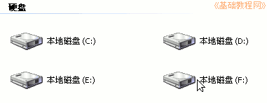

Ubuntu安装基础教程
作者：Teliute 来源：基础教程网
二、准备分区 返回目录 下一课下载好系统安装盘以后，我们来准备Ubuntu安装的磁盘，如果是还装有Windows系统，那么可以在后面给Ubuntu准备一个分区，下面我们来看一个练 习；
1、备份文件
1）打开“我的电脑”，里面有许多磁盘分区，找到最后一个硬盘的本地磁盘分区；

2）瞄准最后这个磁盘分区，点右键，在出来的菜单里选“属性”命令；
3）在出来的属性面板里，查看一下中间的磁盘容量大小，至少要有10G的空间；
4）点“确定”返回，打开这个磁盘分区，把里面的所有文件复制到其他盘中，这个分区将用来安装Ubuntu操作系统；
5）有些文件是隐藏的，点菜单“工具－文件夹选项－查看”，在面板里点掉“隐藏受保护的系统文件”的勾，选中“显示所有文件”，然后点“确定”；
6）对于一键Ghost备份的镜像文件，如果实在不能复制出去，可以用变通的方法，
先还原一下，还原以后不要进行其他操作，等后面分区好了以后重新运行程序备份一下，
也可以用手动的方法，指定备份到其他盘里；
2、检查一下
1）确保磁盘的最后一个分区，已经没有重要数据，包括隐藏文件也检查过；
2）对于一键ghost、一键还原、还原精灵等备份的文件也进行了备份或等安装好以后重新备份，
如果选择重新备份，最好将系统还原到原来的正常状态，并防止感染病毒的操作；
3）已经下载好了Ubuntu的镜像文件；
4）细心、耐心；
本节学习了准备磁盘分区，备份文件的基本方法，如果你成功地完成了练习，请继续学习下一课内容；本教程由86团学校TeliuTe制作|著作权所有
基础教程网：http://teliute.org/
美丽的校园……
转载和引用本站内容，请保留作者和本站链接。